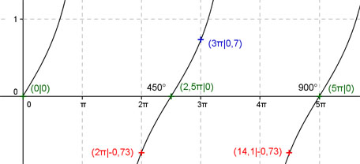

Aufgabe 145 Ergänzen Sie die Wertetabelle für x zwischen 0 und 5π: y = tan 0,4x x 3π 2π oder 14,1 y 0,7 -0,73 Berechnung der Nullstellen: tan 0,4x = 0 ---> Substitution 0,4x = u --> tan u = 0 --> u = k * π mit k = 0, 1, 2, ... --> Rücksubstitution liefert 0,4x = k * π |:0,4 --> x = k * 2,5π N1 liegt bei 0 oder 0°, N2 bei 2,5π oder 450°, N3 bei 5π oder 900°.  Funktionswert an einer Stelle x ermitteln: x = 3π f(3π) = tan (0,4 * 3π) = tan (0,4 * 540°) = 0,7 gerundet. Berechnung der x-Werte für y = f(x) = -0,73: f(x) = - 0,73 eingesetzt, existiert einmal zwischen 0 und 2,5π bzw. 0° und 540° und zwischen 2,5π und 5π bzw. 540° und 900° (siehe Graph). tan 0,4x = -0,73 ---> 0,4x = arc tan (-0,73) = -0,63 --> x = - 1,575 = - π/2 gerundet, liegt nicht im Bereich zwischen 0 und 2π --> x1 = (2,5π - π/2) = 2π oder x2 = (5π - π/2) = 14,1 gerundet und α1 = 360° oder α2 = 810°.